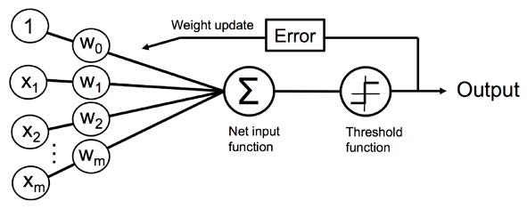

The Navy revealed the embryo of an electronic computer today that it expects will be able to walk, talk, see, write, reproduce itself and be conscious of its existence.
July 8, 1958, The New York Times
The Navy revealed the embryo of an electronic computer today that it expects will be able to walk, talk, see, write, reproduce itself and be conscious of its existence.
July 8, 1958, The New York Times

The embryo in question is a perceptron, a simple logical circuit designed to mimic a biological neuron.
It takes a set of numerical values as inputs, and then spits out either a 0 or a 1.
The inventor of the perceptron, Frank Rosenblatt, was a psychologist by training, with broad interests in astronomy and neurobiology. He used a two-million-dollar IBM 704 computer to simulate his first perceptron. He also had a knack for selling big ideas and described his work in grandiose terms.
Someday, he predicted, his perceptrons would be able to recognize faces and translate speech in real time. Perceptrons would be able to assemble other perceptrons, and perhaps even attain consciousness.
...will make possible a new generation of artificial intelligence [AI] systems that will perform some functions that humans do with ease: see, speak, listen, navigate, manipulate and control.
December 28, 2013, The New York Times
Though the computer hardware is vastly more powerful, the basic approach remains similar to how it was a half century ago.
The hype hasn't diminished2.
Newspapers gush about the latest breakthrough.
AI jobs are paying superstar salaries.
Tech firms are wooing away from campus professors with AI expertise.
Venture capital firms are throwing money at anyone who can say "deep learning" with a straight face.
"Policy makers [are] earnestly having meetings to discuss the rights of robots when they should be talking about discrimination in algorithmic decision making."
Zachary Lipton, AI researcher at Carnegie Mellon University
"Policy makers [are] earnestly having meetings to discuss the rights of robots when they should be talking about discrimination in algorithmic decision making."
Zachary Lipton, AI researcher at Carnegie Mellon University
Advances in AI are great and are spurring a lot of economic activity. However there is currently unreasonable expectations, which drives1 :
irresponsible research in both industry and academia,
threats to personal privacy,
motivates misdirected policy.
"Researchers and technologists spend far too much time focusing on the sexy what-might-be, and far too little time on the important what-is."2
Andrew Ng says worrying about the dangers of superintelligence right now is like worrying about overpopulation on mars. It could concivably happen, but is quite distant.
But the opsing view is that if we dont take the treat seriously now, there could be exponential growth in intelligence and then its too late.
The thing is, ML might just return deminishing marginal returns over time (the more we put in the less we get out).
"[AI poses a] fundamental risk to the existence of human civilization."
Elon Musk, 2017
"There is a vast gulf between AI alarmism in the popular press, and the reality of where AI research actually stands."1
Compared to the human brain, machine learning isn't especially efficient.
A machine learning program requires millions or billions of data points to create its statistical models.
Its only now those petabytes of data are now readily available, along with powerful computers to process them2 .
Fundamental Use Cases for Artificial Intelligence
For many tasks, machine learning proves to be more flexible and nuanced than the traditional programs governed by rules or even humans2 .
Rosenblatt also deserves some credit because many of his ambitious predictions for the use cases of perceptron-like algorithms have come true.
What follows is by no means an exhaustive list!
Digital personal assistants and chatbots
Machine learning has enabled great advances in natural language processing compared to legacy Interactive Voice Response (IVR) systems.
Assistants such as Apples' Siri, Amazons' Alexa, and Googles' Assistant, allow you to do many different tasks:
Control smart devices
Play music and videos
Set timers and reminders
Make appointments
Translate languages
Order from e-commerce sites
All services continue to get better as they continuously learn from interactions with customers.
Digital personal assistants and chatbots
Self-driving cars use a variety of technologies such as radar, sonar, lidar, computer vision, and GPS.3
"Waymo's autonomous cars have driven eight million miles on public roads as well as five billion miles in simulated environments...The disruption caused in our society by this advance in AI alone will be massive. The need for delivery drivers, taxi drivers, and truckers will be obviated. Even if there are still car accidents in a driverless future, millions of lives will be saved because we will eliminate distracted driving and drunk driving...Liability for car accidents will shift from the driver of the vehicle to the manufacturer of the vehicle doing away with the need to have car insurance. This last point is probably one of the reasons why car manufacturers have been slow to deploy this technology. Even car ownership might be flipped on its head since we could summon a car whenever we need one instead of needing one all the time."3
Shipping and Warehouse Management
Self-Driving Cars
Digital personal assistants and chatbots
An Amazon sorting facility demonstrates the symbiotic relationship between humans, computers, and robots that could be present across many industries.
"Computers take customer orders and decide where to route merchandise, the robots act as mules carrying the pallets and inventory around the warehouse. Humans plug the "last mile" problem by hand picking the items that are going into each order."3
"Robots struggle dealing with objects of different sizes, weights, shapes, and fragility; a task that many humans can perform effortlessly. People, therefore, handle the tasks that the robots encounter difficulty with."3
"Amazon's director of robotics fulfillment acknowledged in May 2019 that a fully automated warehouse is at least 10 years away."3
Shipping and Warehouse Management
Self-Driving Cars
Digital personal assistants and chatbots
"AI can assist in generating drug candidates (that is, molecules to be tested for medical application) and then quickly eliminating some of them using constraint satisfaction or experiment simulation. We will learn more about constraint satisfaction programming in later chapters. In a nutshell, this approach allows us to speed up drug discovery by quickly generating millions of possible drug candidates and just as quickly rejecting them if the candidates do not satisfy certain predetermined constraints"3
"Machine learning algorithms can be used to better price insurance by more accurately predicting how much will be spent on a patient, how good a driver an individual is, or how long a person will live."3
"Doctors can make better diagnosis on their patients and be more productive in their practice by using sophisticated rules engines and machine learning."3
"Medical imaging data is a complex and rich source of information about patients. CAT scans, MRIs, and X-rays contain information that is otherwise unavailable. There is a shortage of radiologists and clinicians that can interpret them. Getting results from these images can sometimes take days and can sometimes be misinterpreted."
"At some point soon, we will be able to use the human genome as input to machine learning models and be able to detect and predict a wide variety of diseases and conditions using this vast dataset."3
Healthcare
Shipping and Warehouse Management
Self-Driving Cars
Digital personal assistants and chatbots
ML is deeply embedded in Google search and behind why it is constantly improving the relevancy of its results.3
"Google might have a hard time explaining how it works. You see, this is one of the dilemmas of deep learning. In many cases, it can provide highly accurate results, but deep learning algorithms are usually hard to understand in terms of why an individual answer was given."3
"The lack of explainability of deep learning algorithms has major implications, including legal implications. Lately, Google and Facebook among others, have found themselves under the microscope to determine if their results are biased. In the future, legislators and regulators might require that these tech giants provide a justification for a certain result. If deep learning algorithms do not provide explainability, they might be forced to use other less accurate algorithms that do."3
Knowledge search
Healthcare
Shipping and Warehouse Management
Self-Driving Cars
Digital personal assistants and chatbots
"Recommendation systems are another example of AI technology that has been weaved into our everyday lives. Amazon, YouTube, Netflix, LinkedIn, and Facebook all rely on recommendation technology and we don't even realize we are using it. Recommendation systems rely heavily on data and the more data that is at their disposable, the more powerful they become. It is not coincidence that these companies have some of the biggest market caps in the world and their power comes from them being able to harness the hidden power in their customer's data."3
"An important component of good recommendation systems is a randomization factor that occasionally "goes out on a limb" and makes oddball recommendations that might not be that related to the initial user's choices."3
Recommendation systems
Knowledge search
Healthcare
Shipping and Warehouse Management
Self-Driving Cars
Digital personal assistants and chatbots
"Home monitoring is one area where great solutions are generally available already. The Ring video doorbell from Amazon and the Google Nest thermostat are two inexpensive options that are widely available and popular."3
"A robotic vacuum cleaner is an autonomous robotic vacuum cleaner that uses AI to vacuum a surface. Depending"3
There are many more exciting opportunities to bring AI into the home (when it becomes economically fesible)
Cooking
Make beds
Pick up items off the floor
The smart home
Recommendation systems
Knowledge search
Healthcare
Shipping and Warehouse Management
Self-Driving Cars
Digital personal assistants and chatbots
"It's only in the last few years that machines have been able to consistently beat the masters of some of the harder games."3
Games such as StarCraft 2, Jeopardy, Chess, and Go all have extensive machine learning research
Underwriting and deal analysis
Gaming
The smart home
Recommendation systems
Knowledge search
Healthcare
Shipping and Warehouse Management
Self-Driving Cars
Digital personal assistants and chatbots
"Underwriting is the process by which an institution determines if they want to take a financial risk in exchange for a premium."3
Examples include:
Issuing an insurance policy
Loans
Securities underwriting and Initial Public Offerings (IPOs)
"determining whether an insurance policy or a loan should be issued and at what price can be very costly if the wrong decision is made."3
"Many lenders are already using machine learning in their underwriting."3
Underwriting and deal analysis
Gaming
The smart home
Recommendation systems
Knowledge search
Healthcare
Shipping and Warehouse Management
Self-Driving Cars
Digital personal assistants and chatbots
References
West, Jevin D.; Bergstrom, Carl T.. Calling Bullshit, Penguin Books Ltd.
O'Neil, Cathy. Weapons of Math Destruction (p. 2). Penguin Books Ltd.
Alberto, A., & Prateek, J. (2020). Artificial Intelligence with Python. Packt Publishing Ltd.